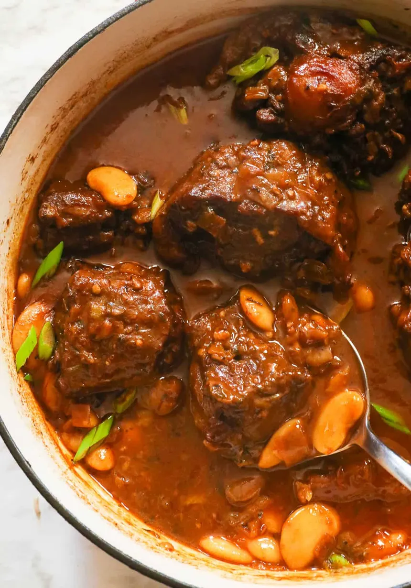

Oxtail Stew Recipe

This braised oxtail stew is my family's favorite dish. It is hearty and perfect on a cold winter day to enjoy with
family and friends.
Ingredients
- 1 tablespoon vegetable oil
- 3 pounds beef oxtail
- 3 medium carrots, diced
- 2 stalks celery, diced
- 1 large onion, diced
- 4 cloves garlic, chopped
- 2 teaspoons chili powder
- 1 teaspoon ground black pepper
- 4 cups beef stock
- 1 cup dry red wine
- 3 tablespoons all-purpose flour
- 3 bay leaves
- 1 cup sliced fresh mushrooms
Steps
- Preheat the oven to 325 degrees F (165 degrees C).
- Heat oil in a large Dutch oven over medium-high heat. Add oxtail and cook until browned on all sides, about 10 minutes. Remove oxtail from Dutch oven and set aside.
- Add carrots, celery, onion, and garlic to Dutch oven. Cook and stir until vegetables are soft, about 5 minutes. Stir in chili powder and black pepper. Add beef stock, red wine, and bay leaves. Return oxtail to Dutch oven. Bring to a boil, reduce heat, and simmer until meat is tender, about 2 hours.
- Remove oxtail from Dutch oven. Strain vegetables from cooking liquid. Return liquid to Dutch oven. In a small bowl, mix flour with 1/4 cup water. Stir into cooking liquid. Bring to a boil, reduce heat, and simmer until thickened, about 5 minutes.
- Return oxtail and vegetables to Dutch oven. Add mushrooms. Cook until heated through, about 5 minutes.
Home